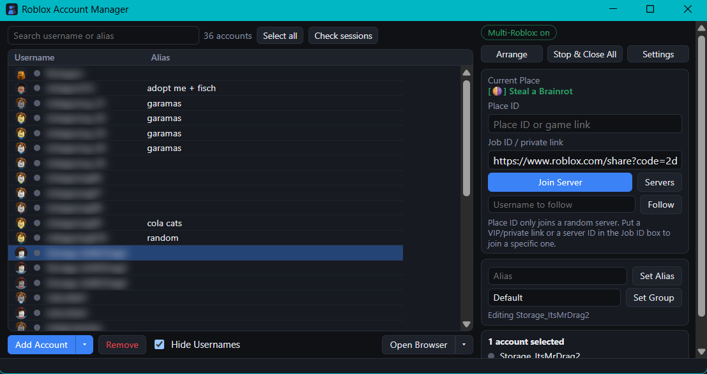

Run your whole army of Roblox accounts from one window. Multi-Roblox, instant launching, and you never get logged out again.

Everything you need to run a stack of accounts, nothing you don't.
Run as many Roblox clients at once as your PC can handle. No tricks, no extra tabs.
Into any game, a specific server, a VIP/private link, or straight onto a friend.
Automatic cookie refresh and a keep-alive so your sessions just stay alive.
Accounts are locked down with Windows-grade encryption and never leave your PC.
Holds the multi-Roblox lock all session and can boot on startup, out of your way.
Themes, aliases, groups, drag-select, right-click menus, and bulk account tools.
No command line. No nonsense.
Download the latest release zip.
Unzip it anywhere you like.
Double-click the .exe.
Import your accounts and go.
Yes. Completely free and open source under the MIT license.
Your accounts never leave your PC. They are stored encrypted on your own machine. The app is open source so anyone can read exactly what it does.
Add your accounts, turn on Multi-Roblox, and launch as many as you want. Each one opens as its own Roblox client.
Windows only for now. The core features rely on Windows, so there is no Mac build.
Yes. Use Import from RAM to load an existing AccountData.json, or paste cookies / user:pass lines.